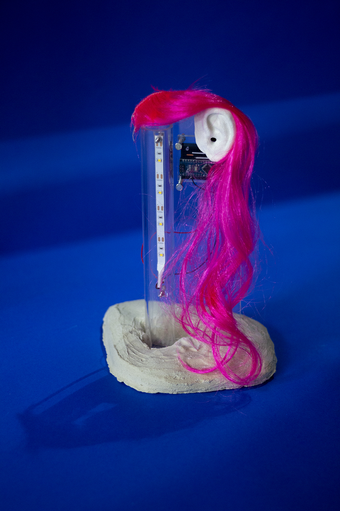

Artifacts images
Week 17 reflections.
What will it do?
Artifact family that provokes a reaction during the interaction.
Generate a discussion about the technology agency.
The somaesthetic design applied to HCI challenging the main narrative behind the tech materiality.
Who’s done what beforehand?
ECAL Delirious Home
Furniture Pets (DAN ADLEŠIČ)
What will you design?
Switches for a speculative present.
Switches are the most forgotten step in the interaction with the everyday machines. When we switch on a machine we hope that magically the machine do whatever we bought it for.
I purpose a speculative present where all the things that surround us play an active role in our lives. A present where we have to perform a “dance” of gestures around objects that reach another presence level. The human has a non-written agreement and language to interact with the objects. As with people, we cannot treat them badly because we see the “otherness” in them. I won't transfer this otherness to daily objects.
What materials and components will be used?
Steel, concrete, silicone, trash, and Arduino. (Prostheses with hair, acrylic and wax)
Where will it come from?
Neighbor trash, stores, …
How much will they cost?
I don't know yet.
What parts and systems will be made?
To do the artefacts I will use a material object with different materials and techniques. Each artefact will have also a programming microcontroller that allows the object to interact in a specific way.
What processes will be used?
Molding and casting, soldering, assembly, PCB production, Coding and programming.
What questions need to be answered?
How this specific speculative future can be perceived for other people?
How engage the community which I had been working with?
How can I avoid the perception about my artifacts as simple gadgets?
How will it be evaluated?
Round table with my community
Feedbacks from theeexhibiton viewers.